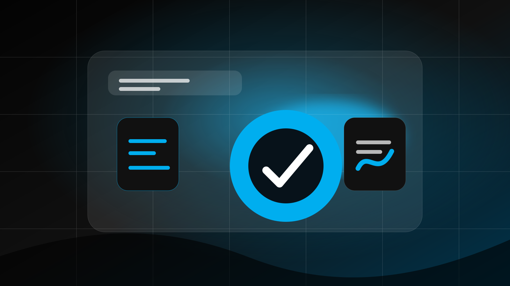

Cover StoryThe website is where your marketing either compounds—or leaks.
This publication-style option positions VNW as a thoughtful digital partner with a strong point of view.
Read the cover story ↗VNW INSIGHTS

Cover StoryThis publication-style option positions VNW as a thoughtful digital partner with a strong point of view.
Read the cover story ↗Departments
Short takes on what businesses should fix before spending more.
Search behavior, local visibility, and content opportunities.
Practical ways to reduce friction and increase action.
UX observations that make websites easier to trust and use.
Magazine FAQ
It gives the brand more personality and makes resources feel like a publication rather than a basic blog list.
Yes, as long as departments become consistent topic clusters with internal links to guides, services, and case studies.
Visitors who value taste, point of view, creative confidence, and strategic thinking.
Editorial CTA